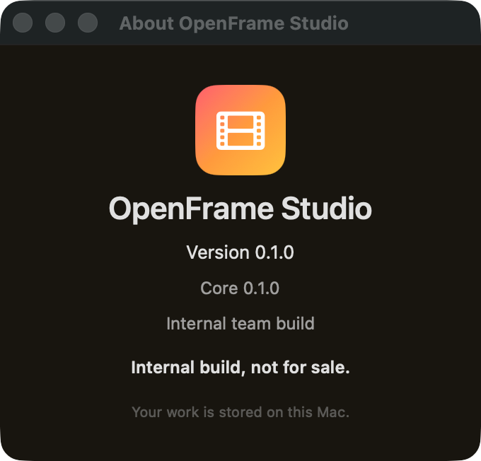

Settings · page 013 of 179 · window 340×326 pt · dark appearance (light version)
Reached from OpenFrame Studio menu by menu-about. Controls on this screen:

OpenFrame StudioVersion 0.1.0Core 0.1.0Internal team buildInternal build, not for sale.Your work is stored on this Mac.About OpenFrame Studio